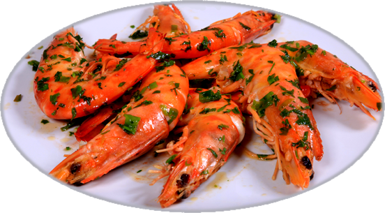
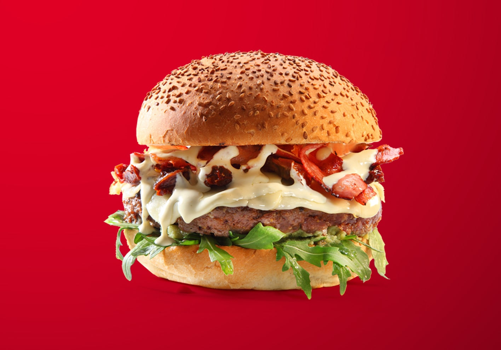
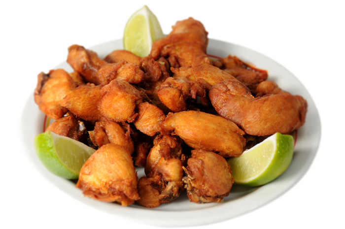
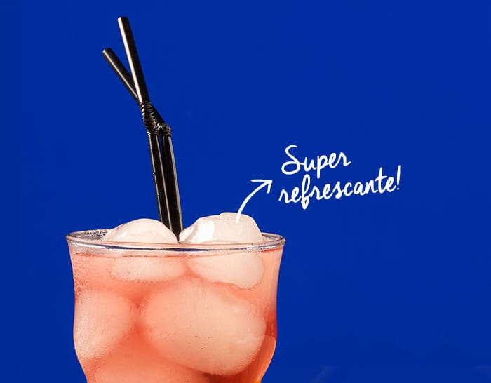
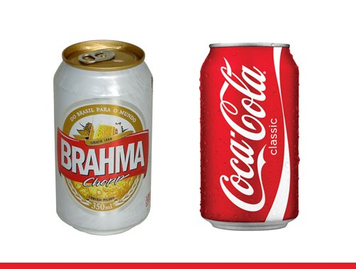
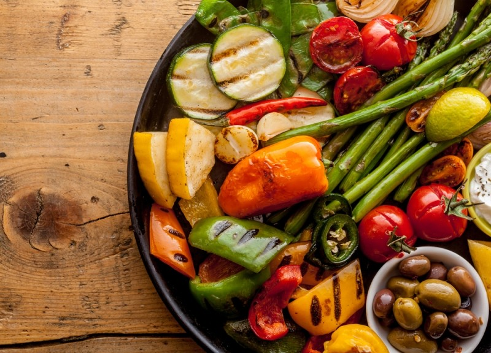

<ion-header>
  <ion-toolbar>
    <ion-title>Restaurantes</ion-title>
  </ion-toolbar>
</ion-header>

<ion-content>
  <ion-slides class="categorias">
    <ion-slide (click) = "filterCategoria('Frutos')">
        <ion-card>
            
            <ion-card-header>
              <ion-card-subtitle>Frutos do Mar</ion-card-subtitle>
            </ion-card-header>
        </ion-card>
    </ion-slide>

    <ion-slide (click) = "filterCategoria('Lanches')">
        <ion-card>
            
            <ion-card-header>
              <ion-card-subtitle>Lanches</ion-card-subtitle>
            </ion-card-header>
        </ion-card>
    </ion-slide>

    <ion-slide (click)="filterCategoria('Petiscos')">
        <ion-card>
            
            <ion-card-header>
              <ion-card-subtitle>Petiscos</ion-card-subtitle>
            </ion-card-header>
        </ion-card>
    </ion-slide>
    <ion-slide (click)="filterCategoria('Drinks')">
        <ion-card>
            
            <ion-card-header>
              <ion-card-subtitle>Drinks</ion-card-subtitle>
            </ion-card-header>
        </ion-card>
    </ion-slide>
    <ion-slide (click)="filterCategoria('Bebidas')">
        <ion-card>
            
            <ion-card-header>
              <ion-card-subtitle>Bebidas</ion-card-subtitle>
            </ion-card-header>
        </ion-card>
    </ion-slide>
    <ion-slide (click)="filterCategoria('Vegetariano')">
        <ion-card>
            
            <ion-card-header>
              <ion-card-subtitle>Vegetariano</ion-card-subtitle>
            </ion-card-header>
        </ion-card>
    </ion-slide>
  </ion-slides>
  <ion-toolbar>
    <ion-searchbar placeholder="Procure um Restaurante" (input)="filterList($event)"></ion-searchbar>
  </ion-toolbar>
  <ion-list>
    <ion-item *ngFor="let item of restaurantes" (click)="verCardapio(item)" [routerLink]="['/navtab/cardapio']" class="item">
        <ion-avatar slot="start">
          
        </ion-avatar>
      <div class="detalhes">
        <ion-label text-wrap class="nome">{{item.Nome}}</ion-label>
        <ion-label text-wrap class="tipo">{{item.Tipo}}</ion-label>
        <ion-label text-wrap class="dist">{{item.Dist}} m</ion-label>
      </div>
      <div style="white-space: nowrap" class="avancar">
        <ion-icon class="icon" style="color:#eded07; margin-left:2px" name="star"></ion-icon>
        <p style="color:#eded07">{{item.Estrelas}}</p>
      </div>
    </ion-item>
  </ion-list>

</ion-content>
